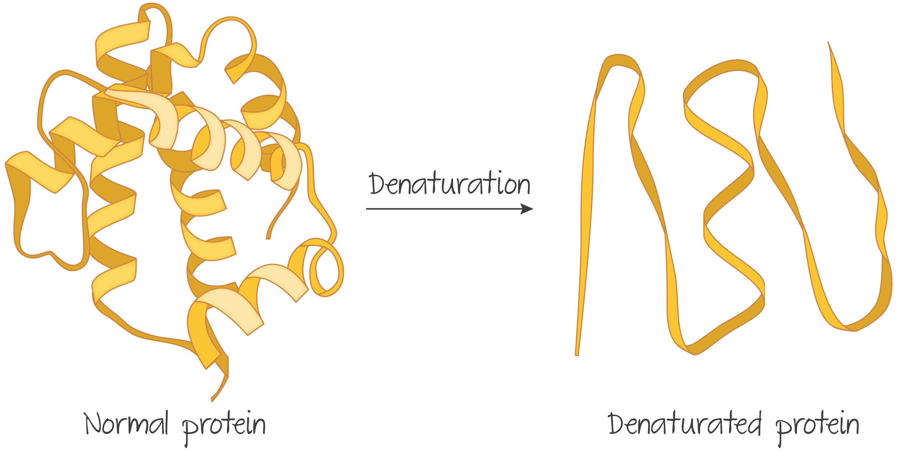
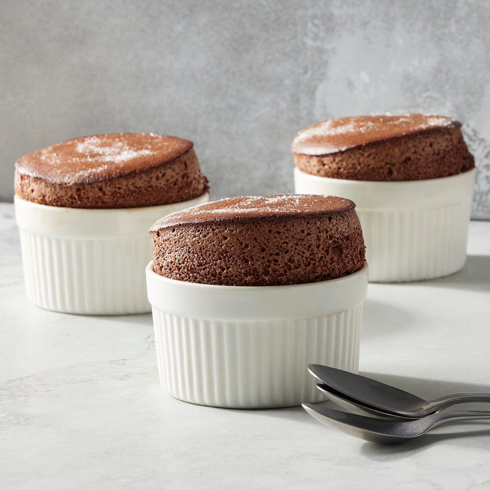

Learn about protein denaturation by making a light and airy egg-based soufflé!
Protein denaturation is a process in which proteins lose their structure due to external stress like heat, acid, mechanical force, or salt. This structural change alters the protein’s physical and chemical properties, and but is essential for many cooking techniques, especially when working with eggs.
Egg proteins are naturally folded in specific shapes that make them soluble and functional in their raw form. When denatured, these proteins unfold, interact with one another, and form new networks with each other. This is crucial for texture, stability, and volume in cooking.
Denaturation occurs in three general steps:
Step 1.
The egg proteins begin to unfold from their native structure due to heat or mechanical agitation. Note that this is a physical change, not a chemical one, but it still leads to significant changes in behavior.

Step 2.
Once unfolded, the exposed parts of the protein (hydrophobic and hydrophilic regions) begin to interact with other unfolded proteins, forming new bonds.
Step 3.
The new protein network traps air and water, creating a solid or semi-solid structure. This is what gives cooked eggs their firm texture and why beaten egg whites can hold peaks and rise when baked.
A soufflé is a dramatic and delicious way to observe protein denaturation in action. This dish relies heavily on the transformation of egg whites through mechanical denaturation (whipping) and thermal denaturation (baking).
A typical soufflé contains:
As the soufflé bakes, you can visually observe the protein network at work — the dish puffs up dramatically as water turns to steam and is trapped by the egg protein matrix. When done right, the inside is creamy and light, while the top forms a gently browned cap.

Try making a chocolate soufflé to taste the difference — you’ll notice that the texture is airy, almost mousse-like, yet it holds its shape. This transformation is all thanks to protein denaturation!